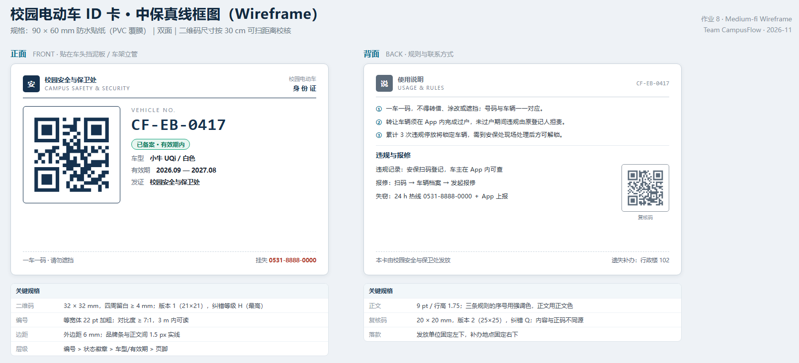
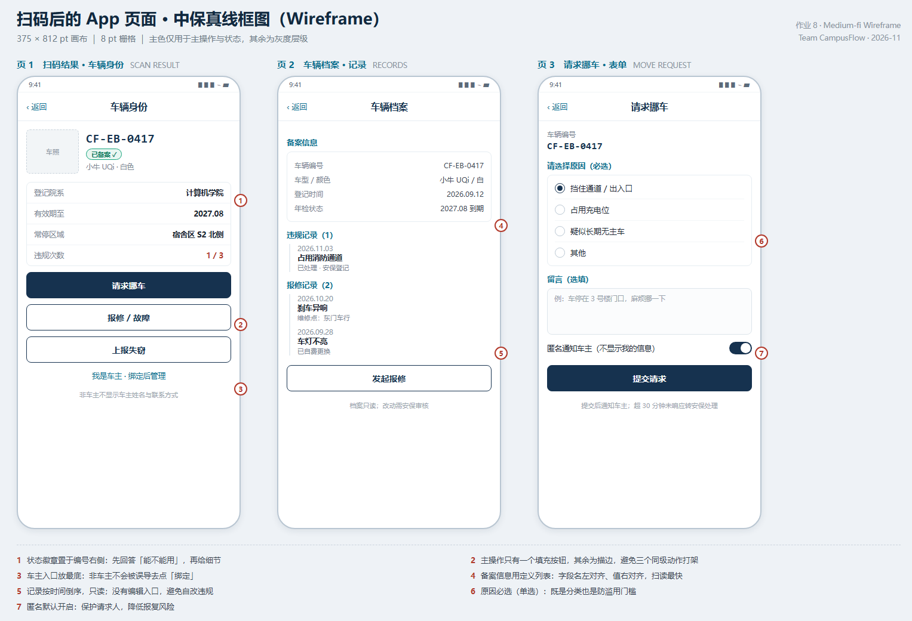

可点击原型Clickable prototype
下面这个手机画面是真的能点的：点「请求挪车」进入表单、点「报修 / 故障」进入车辆档案、 表单可以选原因、可以填留言、提交后会看到成功状态。它对应报告里中保真线框图的三屏设计。
三屏的分工
- 车辆身份 —— 先回答「这车能不能用」：备案状态徽章、车辆编号、常停区域、违规次数； 三个动作按紧急度排序（挪车为主，报修为次，失窃单列）。
- 车辆档案 —— 回答「它过去发生过什么」：备案信息、违规记录、报修记录，全部只读。
- 请求挪车 —— 回答「我怎么让车主挪车」：原因必选、留言选填、默认匿名通知。
为什么这样设计
- 状态先行：第一眼给「能不能用」，而不是给车型和车主。
- 角色化视图：非车主看不到车主信息，只有车主本人能管理本车。
- 一码两用：卡正面码面向所有人，背面复核码只给安保，两者内容不同源。
提示：这是静态演示，没有后端与数据库； 扫码解析、真实通知等功能不在本阶段范围内。
ID 卡设计The card
卡片是 90 × 60 mm 的防水贴纸（PVC 覆膜），双面印刷，贴在车头挡泥板或车架立管上。 正面以二维码为主视觉，背面写规则与联系方式。

图 1 卡片正反面线框图：正面二维码 32 × 32 mm（版本 1，纠错 H），背面复核码 20 × 20 mm
二维码是真的：卡片上的二维码按 ISO/IEC 18004 标准生成，手机可以直接扫。
演示阶段正面码直接编码车辆编号 CF-EB-0417；背面复核码编码一段不同的校验载荷，
因此两张图案明显不同——这正是「一码两用」原则的物理落点。
App 界面线框图App wireframes

图 2 三个页面（375 × 812 pt，8 pt 栅格）：车辆身份 / 车辆档案 / 请求挪车
低保真阶段解决了什么
用手绘草图把「放什么、放哪、给谁看」摆出来， 并用编号批注记录每个决定的理由。草图允许丑、允许潦草，目的是快速对齐而不是定稿。
中保真阶段确定了什么
用栅格、字号层级与组件状态把草图落定： 主操作只有一个填充按钮、状态徽章置于编号右侧、车主入口下沉到页尾——三处都是两轮之间改出来的。
设计原则Design principles
① 一个码，两种用途正面对所有扫码者开放（查状态、请求挪车），背面复核码只给安保，降低被拍照转发后的滥用风险
② 状态先行先回答「能不能用」，再给细节；状态用徽章而不是埋在字段列表里
③ 动作三分挪车、报修、失窃对应三种紧急度与三种角色，不能并列成三个同级按钮
④ 最小必要信息非车主只看得到备案状态与挪车入口，看不到车主姓名与联系方式